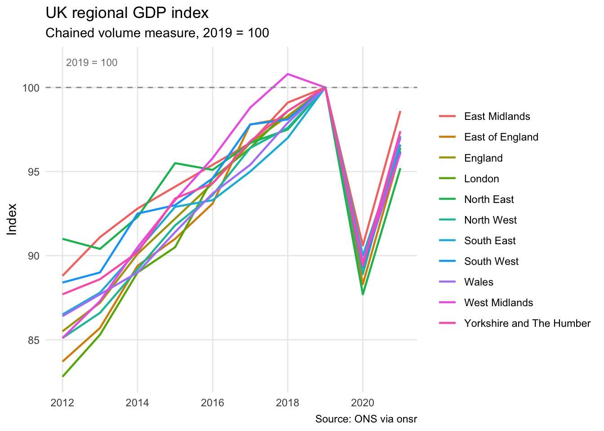
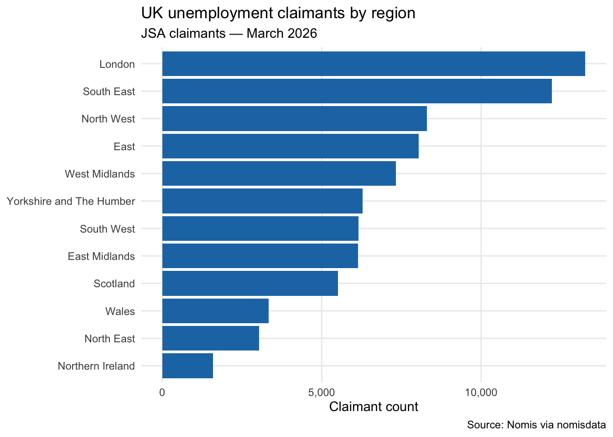
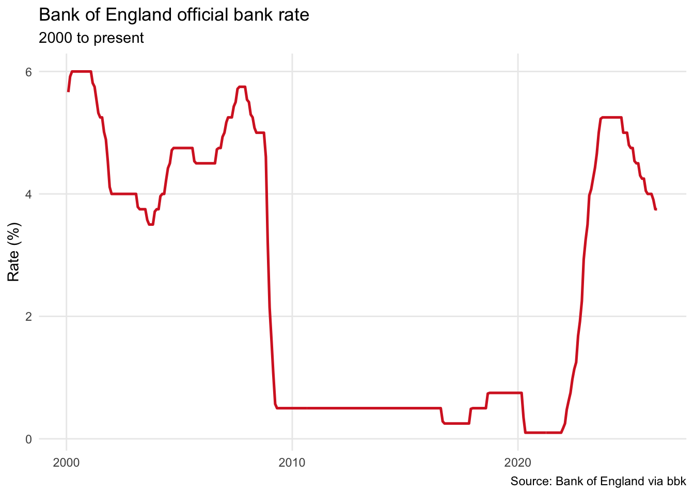

library(tidyverse)
library(onsr)
library(nomisdata)
library(bbk)UK Economic Data
The UK has a well-developed statistical infrastructure, and most of it is freely accessible via R. This chapter covers three complementary packages that between them cover the main sources: the Office for National Statistics, the Nomis labour market database, and the Bank of England.
Packages
A quick map of what each package covers:
onsr— R client for the ONS API, giving access to national accounts, GDP, inflation, and hundreds of other official statisticsnomisdata— Access to Nomis, the ONS service for labour market and census data broken down by geographybbk— Client for the Bank of England’s statistical database, covering interest rates, money supply, exchange rates, and more
All three are on CRAN and require no API key for standard use.
ONS: Regional GDP
The ONS publishes national accounts data through its API. The ons_get() function takes a dataset ID and returns a tidy data frame. Use ons_ids() to see all available datasets.
gdp <- ons_get(id = "regional-gdp-by-year")
head(gdp)# A tibble: 6 × 12
v4_1 `Data Marking` `calendar-years` Time nuts Geography `sic-unofficial`
<dbl> <chr> <dbl> <dbl> <chr> <chr> <chr>
1 -0.1 <NA> 2014 2014 UKL Wales L
2 98.1 <NA> 2016 2016 UKL Wales L
3 NA . 2019 2019 UKZ Extra-regio L
4 NA . 2020 2020 UKZ Extra-regio L
5 NA . 2012 2012 UKL Wales L
6 NA . 2012 2012 UKD North West L
# ℹ 5 more variables: UnofficialStandardIndustrialClassification <chr>,
# `type-of-prices` <chr>, Prices <chr>,
# `quarterly-index-and-growth-rate` <chr>, GrowthRate <chr>The dataset is multi-dimensional — broken down by region, industry, price measure, and series type. We filter to total industry output (A--T) and the annual index (2019 = 100), which lets us compare how different UK regions have grown over time.
gdp_regional <- gdp |>
filter(`sic-unofficial` == "A--T",
GrowthRate == "Annual index",
!Geography %in% c("Extra-regio")) |>
arrange(Geography, Time)
ggplot(gdp_regional, aes(x = Time, y = v4_1, colour = Geography)) +
geom_line(linewidth = 0.8) +
geom_hline(yintercept = 100, linetype = "dashed", colour = "grey60") +
annotate("text", x = 2012.1, y = 101.5, label = "2019 = 100",
size = 3, colour = "grey50", hjust = 0) +
labs(
title = "UK regional GDP index",
subtitle = "Chained volume measure, 2019 = 100",
x = NULL,
y = "Index",
colour = NULL,
caption = "Source: ONS via onsr"
) +
theme_minimal() +
theme(panel.grid.minor = element_blank(),
legend.position = "right")
Nomis: Labour market
Nomis is the ONS’s specialist service for labour market and census data, with results broken down to local authority and ward level. The fetch_nomis() function takes a dataset ID and filter parameters.
# UK unemployment by region
unemployment <- fetch_nomis(
id = "NM_1_1",
time = "latest",
geography = "TYPE480",
measures = 20100,
sex = 7
)
head(unemployment)# A tibble: 6 × 34
DATE DATE_NAME DATE_CODE DATE_TYPE DATE_TYPECODE DATE_SORTORDER GEOGRAPHY
<chr> <chr> <chr> <chr> <dbl> <dbl> <dbl>
1 2026-01 January 20… 2026-01 date 0 0 2.01e9
2 2026-01 January 20… 2026-01 date 0 0 2.01e9
3 2026-01 January 20… 2026-01 date 0 0 2.01e9
4 2026-01 January 20… 2026-01 date 0 0 2.01e9
5 2026-01 January 20… 2026-01 date 0 0 2.01e9
6 2026-01 January 20… 2026-01 date 0 0 2.01e9
# ℹ 27 more variables: GEOGRAPHY_NAME <chr>, GEOGRAPHY_CODE <chr>,
# GEOGRAPHY_TYPE <chr>, GEOGRAPHY_TYPECODE <dbl>, GEOGRAPHY_SORTORDER <dbl>,
# SEX <dbl>, SEX_NAME <chr>, SEX_CODE <dbl>, SEX_TYPE <chr>,
# SEX_TYPECODE <dbl>, SEX_SORTORDER <dbl>, ITEM <dbl>, ITEM_NAME <chr>,
# ITEM_CODE <dbl>, ITEM_TYPE <chr>, ITEM_TYPECODE <dbl>,
# ITEM_SORTORDER <dbl>, MEASURES <dbl>, MEASURES_NAME <chr>, OBS_VALUE <dbl>,
# OBS_STATUS <chr>, OBS_STATUS_NAME <chr>, OBS_CONF <lgl>, …unemployment |>
filter(!is.na(OBS_VALUE), ITEM_NAME == "Total claimants") |>
arrange(desc(OBS_VALUE)) |>
ggplot(aes(x = reorder(GEOGRAPHY_NAME, OBS_VALUE), y = OBS_VALUE)) +
geom_col(fill = "#1f77b4") +
coord_flip() +
scale_y_continuous(labels = scales::comma) +
labs(
title = "UK unemployment claimants by region",
subtitle = paste("JSA claimants —", format(Sys.Date(), "%B %Y")),
x = NULL,
y = "Claimant count",
caption = "Source: Nomis via nomisdata"
) +
theme_minimal() +
theme(panel.grid.minor = element_blank())
Bank of England: Base rate
The bbk package covers several central banks — the boe_* functions are specific to the Bank of England. The series ID IUMABEDR is the official Bank Rate.
bank_rate <- boe_data(
key = "IUMABEDR",
start_date = "2000-01-01"
)
head(bank_rate) date key value description freq
<Date> <char> <num> <char> <char>
1: 2000-01-31 IUMABEDR 5.6625 Monthly average of official Bank Rate monthly
2: 2000-02-29 IUMABEDR 5.9167 Monthly average of official Bank Rate monthly
3: 2000-03-31 IUMABEDR 6.0000 Monthly average of official Bank Rate monthly
4: 2000-04-30 IUMABEDR 6.0000 Monthly average of official Bank Rate monthly
5: 2000-05-31 IUMABEDR 6.0000 Monthly average of official Bank Rate monthly
6: 2000-06-30 IUMABEDR 6.0000 Monthly average of official Bank Rate monthly
seasonal_adjustment type output_in instrument_currency
<char> <char> <char> <char>
1: Not seasonally adjusted Interest rate Percent Sterling
2: Not seasonally adjusted Interest rate Percent Sterling
3: Not seasonally adjusted Interest rate Percent Sterling
4: Not seasonally adjusted Interest rate Percent Sterling
5: Not seasonally adjusted Interest rate Percent Sterling
6: Not seasonally adjusted Interest rate Percent Sterling
instruments
<char>
1: Official Bank Rate
2: Official Bank Rate
3: Official Bank Rate
4: Official Bank Rate
5: Official Bank Rate
6: Official Bank Ratebank_rate |>
filter(!is.na(value)) |>
ggplot(aes(x = date, y = value)) +
geom_line(colour = "#d62728", linewidth = 0.9) +
labs(
title = "Bank of England official bank rate",
subtitle = "2000 to present",
x = NULL,
y = "Rate (%)",
caption = "Source: Bank of England via bbk"
) +
theme_minimal() +
theme(panel.grid.minor = element_blank())
The post-2022 rate cycle is striking in context — rates went from near-zero (where they had sat since the 2008 financial crisis) to over 5% in the space of two years, before starting to come back down.